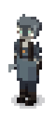
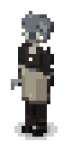
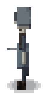
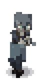

Bound Skirmisher
Bound Skirmisher is a creature of Marrowfield (level 32–34).
Bound Skirmisher is a creature of Marrowfield (level 32–34).
In the game
In the game the Bound Skirmisher is level 32–34, normal. It is undead. It is found in The Mustering Fields. It can drop Bearer's Belt (1%), Crow-Feather Cloak (1%), Grey Wool Bracers (1%), Trench Boots (1%) and rarely one of 8 rare items.
Quests
Quests that ask for it: Slingers on the Fields (behind the level cap).
Gallery







